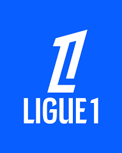
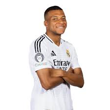
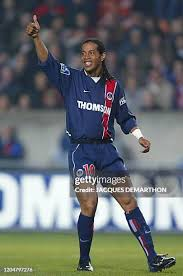

Ligue 1 este prima ligă de fotbal profesionist din Franța și una dintre cele mai vechi din Europa, fondată în 1932. Este cunoscută pentru promovarea tinerelor talente și pentru cluburi de tradiție precum Paris Saint-Germain, Olympique Lyonnais și Olympique de Marseille.
Ligue 1 a crescut enorm în popularitate în ultimii ani, atrăgând staruri internaționale și oferind meciuri spectaculoase. Este o competiție echilibrată, unde cluburile luptă intens pentru titlul de campioană a Franței.

Kylian Mbappé
Paris Saint-Germain
Superstar francez, rapid, tehnic și eficient.

Ronaldinho
Paris Saint-Germain
Magicianul brazilian a încântat fanii cu driblinguri și zâmbetul său.